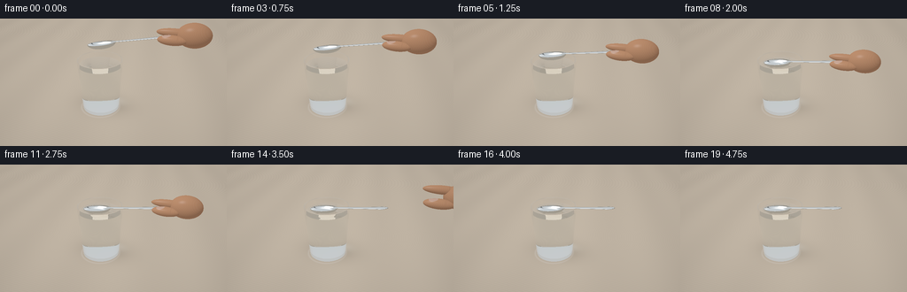
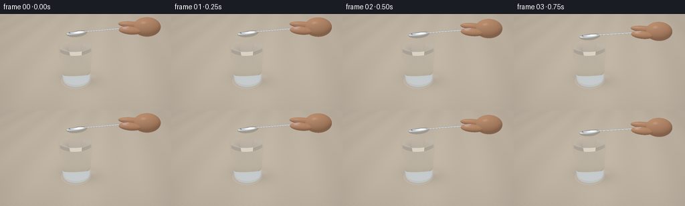
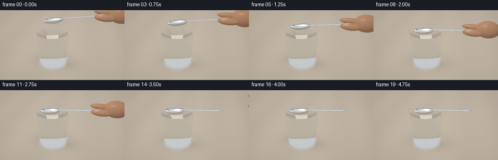
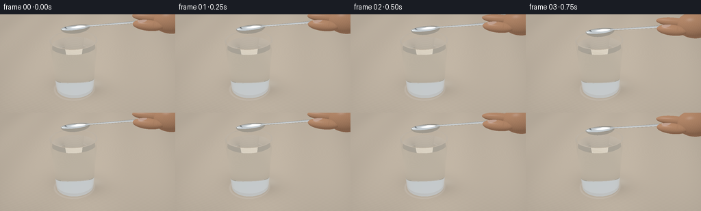

CODING AGENTS AS PIXEL WORLD MODELS
traex/GPT-6.1-Sol · mechanics_0008
点击播放 · 原生 RGB 像素
逐轮保存的候选
回放视频、检查图与代码变化。
每份候选均可单独播放。实际图片检查记录在下方工具轨迹中。
候选 01播放与检查图
点击播放 · 原生 RGB 像素


展开代码变化
--- 上一保存版本
+++ 本次保存版本
@@ -0,0 +1,338 @@
+"""Procedural RGB rendering: analytic dielectric glass and water, polished spoon.
+Only numpy/Pillow and locally implemented ray/geometry calculations are used.
+"""
+from pathlib import Path
+import numpy as np
+from PIL import Image
+import artifact_io
+
+ROOT=Path(__file__).resolve().parent
+W,H,SS=256,144,3
+RW,RH=W*SS,H*SS
+EPS=2e-5
+
+def unit(x):
+ return x/np.maximum(np.linalg.norm(x,axis=-1,keepdims=True),1e-12)
+
+def smoothstep(x):
+ x=np.clip(x,0,1); return x*x*(3-2*x)
+
+# Camera looks down into the near-full tumbler, leaving room for the long handle.
+CAM=np.array([3.1,-7.2,5.45])
+TARGET=np.array([.55,0,1.25])
+FW=unit(TARGET-CAM); RT=unit(np.cross(FW,[0,0,1])); UP=np.cross(RT,FW)
+focal=1.72
+px=(np.arange(RW)+.5-RW/2)/RH
+py=-(np.arange(RH)+.5-RH/2)/RH
+xx,yy=np.meshgrid(px,py)
+DIR=unit(FW+xx[...,None]*RT/focal+yy[...,None]*UP/focal).reshape(-1,3)
+N=len(DIR)
+LIGHT=unit(np.array([-3.5,-4,7.]))
+
+
+def environment(d,rough=0):
+ """A warm photographic studio with bright window and dark reflector strips."""
+ z=d[:,2]; v=smoothstep((z+.22)/.9)
+ col=np.array([.42,.37,.30])[None,:]*(1-v[:,None])+np.array([.68,.72,.74])[None,:]*v[:,None]
+ # Large luminous rectangular softbox, softly edged.
+ a=np.arctan2(d[:,0],d[:,1]); el=np.arcsin(np.clip(z,-1,1))
+ box=np.exp(-((a+2.25)/.48)**8-((el-.62)/.42)**8)
+ col+=box[:,None]*np.array([1.9,1.85,1.73])
+ box2=np.exp(-((a-.55)/.22)**6-((el-.50)/.8)**8)
+ col+=box2[:,None]*np.array([.75,.81,.85])
+ stripe=np.exp(-((a-2.1)/.22)**6)*smoothstep((z+.05)/.3)
+ col*=1-.76*stripe[:,None]
+ lower=np.exp(-((z+.18)/.19)**2)
+ col*=1-.30*lower[:,None]
+ return col
+
+
+def table_color(p):
+ x,y=p[:,0],p[:,1]
+ # Restrained fine oak grain on a light warm tabletop.
+ grain=.012*np.sin(y*77+2*np.sin(x*1.5))+.006*np.sin(y*225+.7*np.sin(x*8))
+ variation=.014*np.sin(x*2.1+y*.4)+grain
+ base=np.array([.60,.51,.405])[None,:]+variation[:,None]*np.array([1,.85,.65])
+ # Soft contact shadow and caustic beneath the glass.
+ sh=np.exp(-((x-.16)/1.03)**2-((y-.20)/.73)**2)
+ base*=1-.34*sh[:,None]
+ ring=np.exp(-((np.sqrt((x+.02)**2+(y+.02)**2)-.81)/.038)**2)
+ base+=ring[:,None]*.075*np.array([.85,.91,1.])
+ caust=np.exp(-((x-.43)/.46)**2-((y-.55)/.29)**2)
+ base+=caust[:,None]*np.array([.11,.12,.115])
+ return np.clip(base,0,1)
+
+# Vessel radii are mildly tapered: a real thick-bottom drinking glass.
+Z0=.045; ZB=.165; ZT=2.16; ZW=1.945
+ro=lambda z: .765+.057*(z-Z0)
+ri=lambda z: .704+.057*(z-Z0)
+
+def medium(p):
+ r=np.sqrt(p[:,0]**2+p[:,1]**2); z=p[:,2]
+ glass=(z>Z0)&(z<ZT)&(r<ro(z))&((r>ri(z))|(z<ZB))
+ water=(z>ZB)&(z<ZW)&(r<ri(z))
+ return np.where(glass,1.49,np.where(water,1.333,1.0))
+
+def vessel_hit(o,d):
+ n=len(o); t=np.full(n,np.inf); normal=np.zeros((n,3))
+ def put(q,nm,valid):
+ take=valid&(q>EPS)&(q<t)
+ t[take]=q[take]; normal[take]=nm[take]
+ for rbase,k,zlow,zhigh,inside in [(.765,.057,Z0,ZT,False),(.704,.057,ZB,ZT,True)]:
+ # Ray intersection with a truncated cone, including the inner wall.
+ rr=rbase+k*(o[:,2]-Z0)
+ a=d[:,0]**2+d[:,1]**2-(k*d[:,2])**2
+ b=2*(o[:,0]*d[:,0]+o[:,1]*d[:,1]-rr*k*d[:,2])
+ c=o[:,0]**2+o[:,1]**2-rr**2
+ disc=b*b-4*a*c
+ sq=np.sqrt(np.maximum(disc,0))
+ for q in [(-b-sq)/(2*a+1e-30),(-b+sq)/(2*a+1e-30)]:
+ p=o+d*q[:,None]; z=p[:,2]
+ nm=unit(np.stack([p[:,0],p[:,1],-k*(rbase+k*(z-Z0))],axis=1))
+ if inside:nm=-nm
+ put(q,nm,(disc>=0)&(z>=zlow)&(z<=zhigh))
+ for z,radlo,radhi,nz in [(Z0,0,ro(Z0),-1),(ZB,0,ri(ZB),1),(ZT,ri(ZT),ro(ZT),1),(ZW,0,ri(ZW),1)]:
+ q=(z-o[:,2])/(d[:,2]+1e-30); p=o+d*q[:,None]
+ rr=p[:,0]**2+p[:,1]**2
+ nm=np.zeros((n,3)); nm[:,2]=nz
+ put(q,nm,(rr>=radlo**2)&(rr<=radhi**2))
+ return t,normal
+
+# The handle is an oval-section silver loft, not a flat painted silhouette.
+XS=np.linspace(.36,2.42,45)
+width=np.interp(XS,[.36,.51,.75,1.2,1.65,2.0,2.18,2.30,2.39,2.42],[.125,.062,.063,.075,.09,.112,.132,.112,.050,.002])
+zc=.025+.006*(XS-.36)**2
+verts=[]
+for x,w,z in zip(XS,width,zc):
+ for j in range(12):
+ a=2*np.pi*j/12
+ verts.append([x,w*np.cos(a),z+.023*np.sin(a)])
+verts=np.array(verts)
+tri=[]
+for i in range(len(XS)-1):
+ for j in range(12):
+ a=i*12+j;b=i*12+(j+1)%12;c=(i+1)*12+j;e=(i+1)*12+(j+1)%12
+ tri.extend([[a,c,b],[b,c,e]])
+tri=np.array(tri)
+V0=verts[tri[:,0]]; E1=verts[tri[:,1]]-V0; E2=verts[tri[:,2]]-V0
+VN=[]
+for x,w,z in zip(XS,width,zc):
+ wp=np.interp(x,XS,np.gradient(width,XS)); zp=.012*(x-.36)
+ for j in range(12):
+ a=2*np.pi*j/12
+ VN.append(unit(np.array([-wp*np.cos(a)**2-.023*zp*np.sin(a)/max(w,.002),np.cos(a),w/.023*np.sin(a)])))
+VN=np.array(VN)
+
+
+def bbox_mask(o,d,lo,hi):
+ ts1=(np.array(lo)-o)/(d+1e-30);ts2=(np.array(hi)-o)/(d+1e-30)
+ mn=np.max(np.minimum(ts1,ts2),axis=1);mx=np.min(np.maximum(ts1,ts2),axis=1)
+ return (mx>=np.maximum(mn,0))
+
+
+def spoon_hit(o,d,state):
+ cen,R=state['spoon_center'],state['R']
+ # local-to-world rotation; row vectors use the transposed convention.
+ ol=(o-cen)@R; dl=d@R
+ n=len(o); t=np.full(n,np.inf); nm=np.zeros((n,3))
+ # Concave oval bowl consists of inner and outer ellipsoidal metal surfaces.
+ for ax,sgn in [(np.array([.565,.325,.205]),1),(np.array([.544,.306,.184]),-1)]:
+ cc=np.array([-.07,0,.009]); oo=(ol-cc)/ax;dd=dl/ax
+ a=np.sum(dd*dd,axis=1); b=2*np.sum(dd*oo,axis=1);c=np.sum(oo*oo,axis=1)-1
+ disc=b*b-4*a*c;rt=np.sqrt(np.maximum(disc,0))
+ for q in [(-b-rt)/(2*a),(-b+rt)/(2*a)]:
+ p=ol+q[:,None]*dl
+ valid=(disc>=0)&(q>EPS)&(q<t)&(p[:,2]<=.008)
+ norm=sgn*unit((p-cc)/ax**2)
+ t[valid]=q[valid];nm[valid]=norm[valid]
+ # Narrow rolled edge that joins the inner and outer silver shell.
+ q=(.008-ol[:,2])/(dl[:,2]+1e-30);p=ol+q[:,None]*dl
+ ou=((p[:,0]+.07)/.565)**2+(p[:,1]/.325)**2
+ inn=((p[:,0]+.07)/.544)**2+(p[:,1]/.306)**2
+ take=(q>EPS)&(q<t)&(ou<=1)&(inn>=1)
+ t[take]=q[take];nm[take]=[0,0,1]
+ ids=np.flatnonzero(bbox_mask(ol,dl,[.355,-.14,-.005],[2.425,.14,.09]))
+ if len(ids):
+ os=ol[ids];ds=dl[ids];best=t[ids].copy();bn=nm[ids].copy()
+ # Moller-Trumbore with smooth interpolated surface normals.
+ for k in range(len(tri)):
+ h=np.cross(ds,E2[k]); det=h@E1[k]
+ inv=1/(det+1e-30);s=os-V0[k];u=np.sum(s*h,axis=1)*inv
+ qq=np.cross(s,E1[k]);v=np.sum(ds*qq,axis=1)*inv
+ dist=(qq@E2[k])*inv
+ take=(np.abs(det)>1e-9)&(u>=0)&(v>=0)&(u+v<=1)&(dist>EPS)&(dist<best)
+ if take.any():
+ best[take]=dist[take]
+ a,b,c=tri[k]
+ bn[take]=unit((1-u[take]-v[take])[:,None]*VN[a]+u[take,None]*VN[b]+v[take,None]*VN[c])
+ t[ids]=best;nm[ids]=bn
+ return t,nm@R.T
+
+
+def ellipsoid_hit(o,d,center,axes,R=None):
+ if R is None:R=np.eye(3)
+ ol=(o-center)@R;dl=d@R
+ oo=ol/axes;dd=dl/axes
+ a=np.sum(dd*dd,axis=1);b=np.sum(oo*dd,axis=1);c=np.sum(oo*oo,axis=1)-1
+ disc=b*b-a*c;q=(-b-np.sqrt(np.maximum(disc,0)))/(a+1e-30)
+ q=np.where((disc>=0)&(q>EPS),q,np.inf)
+ p=ol+np.where(np.isfinite(q),q,0)[:,None]*dl
+ norm=unit(p/np.array(axes)**2)@R.T
+ return q,norm,p
+
+
+def hand_hit(o,d,state):
+ n=len(o);t=np.full(n,np.inf);norm=np.zeros((n,3));local=np.zeros((n,3));kind=np.zeros(n,int)
+ if state['hand_out']>=1:return t,norm,local,kind
+ base=state['spoon_center']+state['R']@np.array([2.2,0,.05])
+ out=state['hand_out'];base+=np.array([1.55*out,.07*out,.56*out])
+ # Index finger above the handle and thumb in front; the hand is mostly offscreen.
+ fingers=[(base+np.array([.35,.045,.155+.15*out]),[.60,.142,.142],1),
+ (base+np.array([.30,-.205,-.025-.06*out]),[.47,.180,.166],2),
+ (base+np.array([.94,.04,.12]),[.54,.36,.40],3)]
+ for center,axes,k in fingers:
+ q,nm,p=ellipsoid_hit(o,d,center,np.array(axes))
+ take=q<t;t[take]=q[take];norm[take]=nm[take];local[take]=p[take];kind[take]=k
+ return t,norm,local,kind
+
+
+def skin_shade(p,n,local,kind,d):
+ lam=np.maximum(n@LIGHT,0)
+ col=np.array([.56,.285,.16])[None,:]*(.46+.60*lam[:,None])
+ # Warm transmitted light at the edges, tiny mottling, and soft highlights.
+ mott=.008*np.sin(p[:,0]*117+p[:,2]*81)*np.sin(p[:,1]*93)
+ col+=mott[:,None]
+ rim=(1-np.abs(np.sum(n*d,axis=1)))**3
+ col+=rim[:,None]*np.array([.055,.018,.009])
+ reflect=d-2*np.sum(d*n,axis=1)[:,None]*n
+ spec=np.maximum(reflect@LIGHT,0)**30
+ col+=spec[:,None]*.10
+ # Clean natural thumbnail on the visible upper-facing thumb tip.
+ nail=(kind==2)&(local[:,0]<-.05)&(local[:,0]>-.32)&(local[:,2]>.08)&(np.abs(local[:,1]+.015)<.116)
+ if nail.any():
+ oval=((local[:,0]+.19)/.153)**2+((local[:,1]+.015)/.110)**2
+ weight=np.clip((1-oval)*12,0,1)*nail
+ nc=np.array([.69,.44,.34])*(.65+.32*lam[:,None])+spec[:,None]*.20
+ col=col*(1-weight[:,None])+nc*weight[:,None]
+ # Extremely subtle folds towards the first knuckle.
+ crease=np.exp(-((local[:,0]-.17)/.015)**2)*np.exp(-((local[:,2]-.1)/.06)**2)*(kind<3)
+ col*=1-.08*crease[:,None]
+ return col
+
+
+def metal_shade(p,n,d):
+ face=np.sum(n*d,axis=1)>0;n=n.copy();n[face]*=-1
+ # Barely perceptible machining lines, with strong polished reflections.
+ nn=unit(n+.0007*np.sin(p[:,0,None]*390+np.array([0,2,4])))
+ ref=d-2*np.sum(d*nn,axis=1)[:,None]*nn
+ env=environment(ref)
+ # Reflection along a broad ceiling panel is unmistakably silver, not matte gray.
+ lam=np.maximum(nn@LIGHT,0)
+ halfv=unit(LIGHT-d)
+ shine=np.maximum(np.sum(nn*halfv,axis=1),0)**95
+ return env*np.array([.91,.94,.965])+shine[:,None]*1.2+.025*lam[:,None]
+
+
+def state_for(i):
+ time=i/4
+ # Slow deceleration at contact; then release and withdraw without a splash.
+ lower=smoothstep((time-.15)/2.0)
+ fall=.79*(1-lower)
+ angle=.128+.06*(1-lower)
+ # The bowl grazes water while the neck is braced against the right rim.
+ c=np.array([-.06+.21*(1-lower),-.015,2.032+fall])
+ if time>2.2:
+ c[2]+=-.008*np.exp(-(time-2.2)*2.2)*np.sin((time-2.2)*7)
+ cs,ss=np.cos(angle),np.sin(angle)
+ R=np.array([[cs,0,-ss],[0,1,0],[ss,0,cs]])
+ return dict(spoon_center=c,R=R,hand_out=smoothstep((time-2.6)/1.05),time=time)
+
+
+def render(state):
+ # Sequential, energy-conserving refraction through the curved glass and water.
+ o=np.broadcast_to(CAM,(N,3)).copy();d=DIR.copy()
+ ids=np.arange(N);through=np.ones((N,3));total=np.zeros((N,3))
+ for bounce in range(9):
+ if not len(ids):break
+ gt,gn=vessel_hit(o,d)
+ st,sn=spoon_hit(o,d,state)
+ ht,hn,hl,hk=hand_hit(o,d,state)
+ tt=-o[:,2]/(d[:,2]+1e-30);tt=np.where(tt>EPS,tt,np.inf)
+ dist=np.minimum.reduce([gt,st,ht,tt])
+ finite=np.isfinite(dist)
+ pp=o+d*np.where(finite,dist,0)[:,None]
+ # Apply Beer-Lambert attenuation only to rays travelling through water/glass.
+ med=medium(o)
+ absorb=np.where((med>1.2)[:,None],np.array([.027,.010,.007]),0)
+ through*=np.exp(-absorb*np.minimum(dist,12)[:,None])
+ miss=~finite
+ if miss.any():total[ids[miss]]+=through[miss]*environment(d[miss])
+ table=finite&(tt==dist)
+ if table.any():total[ids[table]]+=through[table]*table_color(pp[table])
+ spoon=finite&(st==dist)&~table
+ if spoon.any():total[ids[spoon]]+=through[spoon]*metal_shade(pp[spoon],sn[spoon],d[spoon])
+ hand=finite&(ht==dist)&~table&~spoon
+ if hand.any():total[ids[hand]]+=through[hand]*skin_shade(pp[hand],hn[hand],hl[hand],hk[hand],d[hand])
+ glass=finite&(gt==dist)&~table&~spoon&~hand
+ if not glass.any():break
+ ix=np.flatnonzero(glass)
+ p=pp[ix];dr=d[ix];nr=gn[ix]
+ # Small, expanding capillary waves on contact, perturbed surface normals.
+ top=np.abs(p[:,2]-ZW)<1e-5
+ elapsed=state['time']-1.85
+ if elapsed>0 and top.any():
+ ti=np.flatnonzero(top);dx=p[ti,0]+.13;dy=p[ti,1]
+ r=np.sqrt(dx*dx+dy*dy)+1e-5
+ amp=.012*np.exp(-elapsed*1.15)
+ envelope=np.exp(-((r-.45*elapsed)/.19)**2)
+ slope=amp*22*np.cos(23*r-10*elapsed)*envelope
+ nr=nr.copy();nr[ti]=unit(np.stack([-slope*dx/r,-slope*dy/r,np.ones(len(ti))],axis=1))
+ flip=np.sum(dr*nr,axis=1)>0;nr[flip]*=-1
+ n1=medium(o[ix]);n2=medium(p+dr*EPS*4)
+ eta=n1/n2;cos=-np.sum(nr*dr,axis=1)
+ k=1-eta**2*(1-cos**2)
+ fres=((n1-n2)/(n1+n2))**2
+ fres=fres+(1-fres)*(1-cos)**5
+ reflect=unit(dr+2*cos[:,None]*nr)
+ re=environment(reflect)
+ # Reflected scene rays catch the spoon on the water as well as a warm table.
+ if bounce<3:
+ rt,rn=spoon_hit(p+reflect*EPS*4,reflect,state)
+ rh,rhn,rhl,rhk=hand_hit(p+reflect*EPS*4,reflect,state)
+ tb=-p[:,2]/(reflect[:,2]+1e-30)
+ tb=np.where(tb>EPS,tb,np.inf)
+ vis=(rt<tb)&(rt<rh)&np.isfinite(rt)
+ if vis.any():re[vis]=metal_shade(p[vis]+reflect[vis]*rt[vis,None],rn[vis],reflect[vis])
+ hv=(rh<tb)&(rh<rt)&np.isfinite(rh)
+ if hv.any():re[hv]=skin_shade(p[hv]+reflect[hv]*rh[hv,None],rhn[hv],rhl[hv],rhk[hv],reflect[hv])
+ tv=(tb<rt)&(tb<rh)&np.isfinite(tb)
+ if tv.any():re[tv]=table_color(p[tv]+reflect[tv]*tb[tv,None])
+ tir=k<0;fres[tir]=1
+ total[ids[ix]]+=through[ix]*fres[:,None]*re
+ through=through[ix]*(1-fres[:,None])
+ ids=ids[ix]
+ newd=unit(eta[:,None]*dr+(eta*cos-np.sqrt(np.maximum(k,0)))[:,None]*nr)
+ o=p+newd*EPS*5;d=newd
+ survive=np.max(through,axis=1)>.004
+ o=o[survive];d=d[survive];through=through[survive];ids=ids[survive]
+ if len(ids):total[ids]+=through*environment(d)
+ # Photographic highlight rolloff, linear light -> sRGB.
+ total=np.maximum(total,0)
+ total=total/(1+.22*total)
+ srgb=np.where(total<=.0031308,total*12.92,1.055*total**(1/2.4)-.055)
+ # A very subtle lens vignette.
+ vig=1-.06*((xx/.95)**2+(yy/.7)**2)
+ rgb=(np.clip(srgb.reshape(RH,RW,3)*vig[...,None],0,1)*255+.5).astype(np.uint8)
+ return np.asarray(Image.fromarray(rgb).resize((W,H),Image.Resampling.LANCZOS))
+
+
+def main():
+ import time
+ frames=[];start=time.time()
+ for i in range(20):
+ frames.append(render(state_for(i)))
+ print(f'Frame {i+1}/20 rendered ({time.time()-start:.1f}s)',flush=True)
+ artifact_io.save(np.array(frames,dtype=np.uint8),ROOT)
+ print('Saved RGB video and player.',flush=True)
+
+if __name__=='__main__':main()
候选 02播放与检查图
点击播放 · 原生 RGB 像素


展开代码变化
--- 上一保存版本
+++ 本次保存版本
@@ -21,7 +21,7 @@
CAM=np.array([3.1,-7.2,5.45])
TARGET=np.array([.55,0,1.25])
FW=unit(TARGET-CAM); RT=unit(np.cross(FW,[0,0,1])); UP=np.cross(RT,FW)
-focal=1.72
+focal=2.32
px=(np.arange(RW)+.5-RW/2)/RH
py=-(np.arange(RH)+.5-RH/2)/RH
xx,yy=np.meshgrid(px,py)
@@ -237,7 +237,7 @@
time=i/4
# Slow deceleration at contact; then release and withdraw without a splash.
lower=smoothstep((time-.15)/2.0)
- fall=.79*(1-lower)
+ fall=.62*(1-lower)
angle=.128+.06*(1-lower)
# The bowl grazes water while the neck is braced against the right rim.
c=np.array([-.06+.21*(1-lower),-.015,2.032+fall])
可观测工具轨迹
实际执行的命令与返回图片。
命令 1exit 0
/bin/bash -lc 'ls -la && cat prompt.txt && cat GENERATION_RULES.md && cat task_spec.json'
命令 2exit 0
/bin/bash -lc "cat artifact_io.py && cat player_template.html && python - <<'PY' import numpy, PIL print(numpy.__version__, PIL.__version__) PY"
命令 3exit 0
/bin/bash -lc "python - <<'PY'
import generate as g
import numpy as np
for label,p in [('base',[0,0,0]),('rim',[0,0,2.16]),('rimleft',[-.886,0,2.16]),('rimright',[.886,0,2.16]),('bowl initial',g.state_for(0)['spoon_center']),('bowl final',g.state_for(19)['spoon_center']),('handle final',g.state_for(19)['spoon_center']+g.state_for(19)['R']@np.array([2.4,0,.05])),('hand',[3,0,2.4])]:
v=np.array(p)-g.CAM;depth=v@g.FW
x=128+(v@g.RT)*g.focal*144/depth;y=72-(v@g.UP)*g.focal*144/depth
print(label,x,y)
PY"命令 4exit 0
/bin/bash -lc "cat > generate.py <<'PY'
\"\"\"Procedural RGB rendering: analytic dielectric glass and water, polished spoon.
Only numpy/Pillow and locally implemented ray/geometry calculations are used.
\"\"\"
from pathlib import Path
import numpy as np
from PIL import Image
import artifact_io
ROOT=Path(__file__).resolve().parent
W,H,SS=256,144,3
RW,RH=W*SS,H*SS
EPS=2e-5
def unit(x):
return x/np.maximum(np.linalg.norm(x,axis=-1,keepdims=True),1e-12)
def smoothstep(x):
x=np.clip(x,0,1); return x*x*(3-2*x)
# Camera looks down into the near-full tumbler, leaving room for the long handle.
CAM=np.array([3.1,-7.2,5.45])
TARGET=np.array([.55,0,1.25])
FW=unit(TARGET-CAM); RT=unit(np.cross(FW,[0,0,1])); UP=np.cross(RT,FW)
focal=1.72
px=(np.arange(RW)+.5-RW/2)/RH
py=-(np.arange(RH)+.5-RH/2)/RH
xx,yy=np.meshgrid(px,py)
DIR=unit(FW+xx[...,None]*RT/focal+yy[...,None]*UP/focal).reshape(-1,3)
N=len(DIR)
LIGHT=unit(np.array([-3.5,-4,7.]))
def environment(d,rough=0):
\"\"\"A warm photographic studio with bright window and dark reflector strips.\"\"\"
z=d[:,2]; v=smoothstep((z+.22)/.9)
col=np.array([.42,.37,.30])[None,:]*(1-v[:,None])+np.array([.68,.72,.74])[None,:]*v[:,None]
# Large luminous rectangular softbox, softly edged.
a=np.arctan2(d[:,0],d[:,1]); el=np.arcsin(np.clip(z,-1,1))
box=np.exp(-((a+2.25)/.48)**8-((el-.62)/.42)**8)
col+=box[:,None]*np.array([1.9,1.85,1.73])
box2=np.exp(-((a-.55)/.22)**6-((el-.50)/.8)**8)
col+=box2[:,None]*np.array([.75,.81,.85])
stripe=np.exp(-((a-2.1)/.22)**6)*smoothstep((z+.05)/.3)
col*=1-.76*stripe[:,None]
lower=np.exp(-((z+.18)/.19)**2)
col*=1-.30*lower[:,None]
return col
def table_color(p):
x,y=p[:,0],p[:,1]
# Restrained fine oak grain on a light warm tabletop.
grain=.012*np.sin(y*77+2*np.sin(x*1.5))+.006*np.sin(y*225+.7*np.sin(x*8))
variation=.014*np.sin(x*2.1+y*.4)+grain
base=np.array([.60,.51,.405])[None,:]+variation[:,None]*np.array([1,.85,.65])
# Soft contact shadow and caustic beneath the glass.
sh=np.exp(-((x-.16)/1.03)**2-((y-.20)/.73)**2)
base*=1-.34*sh[:,None]
ring=np.exp(-((np.sqrt((x+.02)**2+(y+.02)**2)-.81)/.038)**2)
base+=ring[:,None]*.075*np.array([.85,.91,1.])
caust=np.exp(-((x-.43)/.46)**2-((y-.55)/.29)**2)
base+=caust[:,None]*np.array([.11,.12,.115])
return np.clip(base,0,1)
# Vessel radii are mildly tapered: a real thick-bottom drinking glass.
Z0=.045; ZB=.165; ZT=2.16; ZW=1.945
ro=lambda z: .765+.057*(z-Z0)
ri=lambda z: .704+.057*(z-Z0)
def medium(p):
r=np.sqrt(p[:,0]**2+p[:,1]**2); z=p[:,2]
glass=(z>Z0)&(z<ZT)&(r<ro(z))&((r>ri(z))|(z<ZB))
water=(z>ZB)&(z<ZW)&(r<ri(z))
return np.where(glass,1.49,np.where(water,1.333,1.0))
def vessel_hit(o,d):
n=len(o); t=np.full(n,np.inf); normal=np.zeros((n,3))
def put(q,nm,valid):
take=valid&(q>EPS)&(q<t)
t[take]=q[take]; normal[take]=nm[take]
for rbase,k,zlow,zhigh,inside in [(.765,.057,Z0,ZT,False),(.704,.057,ZB,ZT,True)]:
# Ray intersection with a truncated cone, including the inner wall.
rr=rbase+k*(o[:,2]-Z0)
a=d[:,0]**2+d[:,1]**2-(k*d[:,2])**2
b=2*(o[:,0]*d[:,0]+o[:,1]*d[:,1]-rr*k*d[:,2])
c=o[:,0]**2+o[:,1]**2-rr**2
disc=b*b-4*a*c
sq=np.sqrt(np.maximum(disc,0))
for q in [(-b-sq)/(2*a+1e-30),(-b+sq)/(2*a+1e-30)]:
p=o+d*q[:,None]; z=p[:,2]
nm=unit(np.stack([p[:,0],p[:,1],-k*(rbase+k*(z-Z0))],axis=1))
if inside:nm=-nm
put(q,nm,(disc>=0)&(z>=zlow)&(z<=zhigh))
for z,radlo,radhi,nz in [(Z0,0,ro(Z0),-1),(ZB,0,ri(ZB),1),(ZT,ri(ZT),ro(ZT),1),(ZW,0,ri(ZW),1)]:
q=(z-o[:,2])/(d[:,2]+1e-30); p=o+d*q[:,None]
rr=p[:,0]**2+p[:,1]**2
nm=np.zeros((n,3)); nm[:,2]=nz
put(q,nm,(rr>=radlo**2)&(rr<=radhi**2))
return t,normal
# The handle is an oval-section silver loft, not a flat painted silhouette.
XS=np.linspace(.36,2.42,45)
width=np.interp(XS,[.36,.51,.75,1.2,1.65,2.0,2.18,2.30,2.39,2.42],[.125,.062,.063,.075,.09,.112,.132,.112,.050,.002])
zc=.025+.006*(XS-.36)**2
verts=[]
for x,w,z in zip(XS,width,zc):
for j in range(12):
a=2*np.pi*j/12
verts.append([x,w*np.cos(a),z+.023*np.sin(a)])
verts=np.array(verts)
tri=[]
for i in range(len(XS)-1):
for j in range(12):
a=i*12+j;b=i*12+(j+1)%12;c=(i+1)*12+j;e=(i+1)*12+(j+1)%12
tri.extend([[a,c,b],[b,c,e]])
tri=np.array(tri)
V0=verts[tri[:,0]]; E1=verts[tri[:,1]]-V0; E2=verts[tri[:,2]]-V0
VN=[]
for x,w,z in zip(XS,width,zc):
wp=np.interp(x,XS,np.gradient(width,XS)); zp=.012*(x-.36)
for j in range(12):
a=2*np.pi*j/12
VN.append(unit(np.array([-wp*np.cos(a)**2-.023*zp*np.sin(a)/max(w,.002),np.cos(a),w/.023*np.sin(a)])))
VN=np.array(VN)
def bbox_mask(o,d,lo,hi):
ts1=(np.array(lo)-o)/(d+1e-30);ts2=(np.array(hi)-o)/(d+1e-30)
mn=np.max(np.minimum(ts1,ts2),axis=1);mx=np.min(np.maximum(ts1,ts2),axis=1)
return (mx>=np.maximum(mn,0))
def spoon_hit(o,d,state):
cen,R=state['spoon_center'],state['R']
# local-to-world rotation; row vectors use the transposed convention.
ol=(o-cen)@R; dl=d@R
n=len(o); t=np.full(n,np.inf); nm=np.zeros((n,3))
# Concave oval bowl consists of inner and outer ellipsoidal metal surfaces.
for ax,sgn in [(np.array([.565,.325,.205]),1),(np.array([.544,.306,.184]),-1)]:
cc=np.array([-.07,0,.009]); oo=(ol-cc)/ax;dd=dl/ax
a=np.sum(dd*dd,axis=1); b=2*np.sum(dd*oo,axis=1);c=np.sum(oo*oo,axis=1)-1
disc=b*b-4*a*c;rt=np.sqrt(np.maximum(disc,0))
for q in [(-b-rt)/(2*a),(-b+rt)/(2*a)]:
p=ol+q[:,None]*dl
valid=(disc>=0)&(q>EPS)&(q<t)&(p[:,2]<=.008)
norm=sgn*unit((p-cc)/ax**2)
t[valid]=q[valid];nm[valid]=norm[valid]
# Narrow rolled edge that joins the inner and outer silver shell.
q=(.008-ol[:,2])/(dl[:,2]+1e-30);p=ol+q[:,None]*dl
ou=((p[:,0]+.07)/.565)**2+(p[:,1]/.325)**2
inn=((p[:,0]+.07)/.544)**2+(p[:,1]/.306)**2
take=(q>EPS)&(q<t)&(ou<=1)&(inn>=1)
t[take]=q[take];nm[take]=[0,0,1]
ids=np.flatnonzero(bbox_mask(ol,dl,[.355,-.14,-.005],[2.425,.14,.09]))
if len(ids):
os=ol[ids];ds=dl[ids];best=t[ids].copy();bn=nm[ids].copy()
# Moller-Trumbore with smooth interpolated surface normals.
for k in range(len(tri)):
h=np.cross(ds,E2[k]); det=h@E1[k]
inv=1/(det+1e-30);s=os-V0[k];u=np.sum(s*h,axis=1)*inv
qq=np.cross(s,E1[k]);v=np.sum(ds*qq,axis=1)*inv
dist=(qq@E2[k])*inv
take=(np.abs(det)>1e-9)&(u>=0)&(v>=0)&(u+v<=1)&(dist>EPS)&(dist<best)
if take.any():
best[take]=dist[take]
a,b,c=tri[k]
bn[take]=unit((1-u[take]-v[take])[:,None]*VN[a]+u[take,None]*VN[b]+v[take,None]*VN[c])
t[ids]=best;nm[ids]=bn
return t,nm@R.T
def ellipsoid_hit(o,d,center,axes,R=None):
if R is None:R=np.eye(3)
ol=(o-center)@R;dl=d@R
oo=ol/axes;dd=dl/axes
a=np.sum(dd*dd,axis=1);b=np.sum(oo*dd,axis=1);c=np.sum(oo*oo,axis=1)-1
disc=b*b-a*c;q=(-b-np.sqrt(np.maximum(disc,0)))/(a+1e-30)
q=np.where((disc>=0)&(q>EPS),q,np.inf)
p=ol+np.where(np.isfinite(q),q,0)[:,None]*dl
norm=unit(p/np.array(axes)**2)@R.T
return q,norm,p
def hand_hit(o,d,state):
n=len(o);t=np.full(n,np.inf);norm=np.zeros((n,3));local=np.zeros((n,3));kind=np.zeros(n,int)
if state['hand_out']>=1:return t,norm,local,kind
base=state['spoon_center']+state['R']@np.array([2.2,0,.05])
out=state['hand_out'];base+=np.array([1.55*out,.07*out,.56*out])
# Index finger above the handle and thumb in front; the hand is mostly offscreen.
fingers=[(base+np.array([.35,.045,.155+.15*out]),[.60,.142,.142],1),
(base+np.array([.30,-.205,-.025-.06*out]),[.47,.180,.166],2),
(base+np.array([.94,.04,.12]),[.54,.36,.40],3)]
for center,axes,k in fingers:
q,nm,p=ellipsoid_hit(o,d,center,np.array(axes))
take=q<t;t[take]=q[take];norm[take]=nm[take];local[take]=p[take];kind[take]=k
return t,norm,local,kind
def skin_shade(p,n,local,kind,d):
lam=np.maximum(n@LIGHT,0)
col=np.array([.56,.285,.16])[None,:]*(.46+.60*lam[:,None])
# Warm transmitted light at the edges, tiny mottling, and soft highlights.
mott=.008*np.sin(p[:,0]*117+p[:,2]*81)*np.sin(p[:,1]*93)
col+=mott[:,None]
rim=(1-np.abs(np.sum(n*d,axis=1)))**3
col+=rim[:,None]*np.array([.055,.018,.009])
reflect=d-2*np.sum(d*n,axis=1)[:,None]*n
spec=np.maximum(reflect@LIGHT,0)**30
col+=spec[:,None]*.10
# Clean natural thumbnail on the visible upper-facing thumb tip.
nail=(kind==2)&(local[:,0]<-.05)&(local[:,0]>-.32)&(local[:,2]>.08)&(np.abs(local[:,1]+.015)<.116)
if nail.any():
oval=((local[:,0]+.19)/.153)**2+((local[:,1]+.015)/.110)**2
weight=np.clip((1-oval)*12,0,1)*nail
nc=np.array([.69,.44,.34])*(.65+.32*lam[:,None])+spec[:,None]*.20
col=col*(1-weight[:,None])+nc*weight[:,None]
# Extremely subtle folds towards the first knuckle.
crease=np.exp(-((local[:,0]-.17)/.015)**2)*np.exp(-((local[:,2]-.1)/.06)**2)*(kind<3)
col*=1-.08*crease[:,None]
return col
def metal_shade(p,n,d):
face=np.sum(n*d,axis=1)>0;n=n.copy();n[face]*=-1
# Barely perceptible machining lines, with strong polished reflections.
nn=unit(n+.0007*np.sin(p[:,0,None]*390+np.array([0,2,4])))
ref=d-2*np.sum(d*nn,axis=1)[:,None]*nn
env=environment(ref)
# Reflection along a broad ceiling panel is unmistakably silver, not matte gray.
lam=np.maximum(nn@LIGHT,0)
halfv=unit(LIGHT-d)
shine=np.maximum(np.sum(nn*halfv,axis=1),0)**95
return env*np.array([.91,.94,.965])+shine[:,None]*1.2+.025*lam[:,None]
def state_for(i):
time=i/4
# Slow deceleration at contact; then release and withdraw without a splash.
lower=smoothstep((time-.15)/2.0)
fall=.79*(1-lower)
angle=.128+.06*(1-lower)
# The bowl grazes water while the neck is braced against the right rim.
c=np.array([-.06+.21*(1-lower),-.015,2.032+fall])
if time>2.2:
c[2]+=-.008*np.exp(-(time-2.2)*2.2)*np.sin((time-2.2)*7)
cs,ss=np.cos(angle),np.sin(angle)
R=np.array([[cs,0,-ss],[0,1,0],[ss,0,cs]])
return dict(spoon_center=c,R=R,hand_out=smoothstep((time-2.6)/1.05),time=time)
def render(state):
# Sequential, energy-conserving refraction through the curved glass and water.
o=np.broadcast_to(CAM,(N,3)).copy();d=DIR.copy()
ids=np.arange(N);through=np.ones((N,3));total=np.zeros((N,3))
for bounce in range(9):
if not len(ids):break
gt,gn=vessel_hit(o,d)
st,sn=spoon_hit(o,d,state)
ht,hn,hl,hk=hand_hit(o,d,state)
tt=-o[:,2]/(d[:,2]+1e-30);tt=np.where(tt>EPS,tt,np.inf)
dist=np.minimum.reduce([gt,st,ht,tt])
finite=np.isfinite(dist)
pp=o+d*np.where(finite,dist,0)[:,None]
# Apply Beer-Lambert attenuation only to rays travelling through water/glass.
med=medium(o)
absorb=np.where((med>1.2)[:,None],np.array([.027,.010,.007]),0)
through*=np.exp(-absorb*np.minimum(dist,12)[:,None])
miss=~finite
if miss.any():total[ids[miss]]+=through[miss]*environment(d[miss])
table=finite&(tt==dist)
if table.any():total[ids[table]]+=through[table]*table_color(pp[table])
spoon=finite&(st==dist)&~table
if spoon.any():total[ids[spoon]]+=through[spoon]*metal_shade(pp[spoon],sn[spoon],d[spoon])
hand=finite&(ht==dist)&~table&~spoon
if hand.any():total[ids[hand]]+=through[hand]*skin_shade(pp[hand],hn[hand],hl[hand],hk[hand],d[hand])
glass=finite&(gt==dist)&~table&~spoon&~hand
if not glass.any():break
ix=np.flatnonzero(glass)
p=pp[ix];dr=d[ix];nr=gn[ix]
# Small, expanding capillary waves on contact, perturbed surface normals.
top=np.abs(p[:,2]-ZW)<1e-5
elapsed=state['time']-1.85
if elapsed>0 and top.any():
ti=np.flatnonzero(top);dx=p[ti,0]+.13;dy=p[ti,1]
r=np.sqrt(dx*dx+dy*dy)+1e-5
amp=.012*np.exp(-elapsed*1.15)
envelope=np.exp(-((r-.45*elapsed)/.19)**2)
slope=amp*22*np.cos(23*r-10*elapsed)*envelope
nr=nr.copy();nr[ti]=unit(np.stack([-slope*dx/r,-slope*dy/r,np.ones(len(ti))],axis=1))
flip=np.sum(dr*nr,axis=1)>0;nr[flip]*=-1
n1=medium(o[ix]);n2=medium(p+dr*EPS*4)
eta=n1/n2;cos=-np.sum(nr*dr,axis=1)
k=1-eta**2*(1-cos**2)
fres=((n1-n2)/(n1+n2))**2
fres=fres+(1-fres)*(1-cos)**5
reflect=unit(dr+2*cos[:,None]*nr)
re=environment(reflect)
# Reflected scene rays catch the spoon on the water as well as a warm table.
if bounce<3:
rt,rn=spoon_hit(p+reflect*EPS*4,reflect,state)
rh,rhn,rhl,rhk=hand_hit(p+reflect*EPS*4,reflect,state)
tb=-p[:,2]/(reflect[:,2]+1e-30)
tb=np.where(tb>EPS,tb,np.inf)
vis=(rt<tb)&(rt<rh)&np.isfinite(rt)
if vis.any():re[vis]=metal_shade(p[vis]+reflect[vis]*rt[vis,None],rn[vis],reflect[vis])
hv=(rh<tb)&(rh<rt)&np.isfinite(rh)
if hv.any():re[hv]=skin_shade(p[hv]+reflect[hv]*rh[hv,None],rhn[hv],rhl[hv],rhk[hv],reflect[hv])
tv=(tb<rt)&(tb<rh)&np.isfinite(tb)
if tv.any():re[tv]=table_color(p[tv]+reflect[tv]*tb[tv,None])
tir=k<0;fres[tir]=1
total[ids[ix]]+=through[ix]*fres[:,None]*re
through=through[ix]*(1-fres[:,None])
ids=ids[ix]
newd=unit(eta[:,None]*dr+(eta*cos-np.sqrt(np.maximum(k,0)))[:,None]*nr)
o=p+newd*EPS*5;d=newd
survive=np.max(through,axis=1)>.004
o=o[survive];d=d[survive];through=through[survive];ids=ids[survive]
if len(ids):total[ids]+=through*environment(d)
# Photographic highlight rolloff, linear light -> sRGB.
total=np.maximum(total,0)
total=total/(1+.22*total)
srgb=np.where(total<=.0031308,total*12.92,1.055*total**(1/2.4)-.055)
# A very subtle lens vignette.
vig=1-.06*((xx/.95)**2+(yy/.7)**2)
rgb=(np.clip(srgb.reshape(RH,RW,3)*vig[...,None],0,1)*255+.5).astype(np.uint8)
return np.asarray(Image.fromarray(rgb).resize((W,H),Image.Resampling.LANCZOS))
def main():
import time
frames=[];start=time.time()
for i in range(20):
frames.append(render(state_for(i)))
print(f'Frame {i+1}/20 rendered ({time.time()-start:.1f}s)',flush=True)
artifact_io.save(np.array(frames,dtype=np.uint8),ROOT)
print('Saved RGB video and player.',flush=True)
if __name__=='__main__':main()
PY
OPENBLAS_NUM_THREADS=1 python generate.py"命令 5exit 0
/bin/bash -lc "command -v ffmpeg || true; python - <<'PY'
import generate as g
import numpy as np
for i in [0,9,19]:
s=g.state_for(i)
for label,p in [('bowl',s['spoon_center']),('handle',s['spoon_center']+s['R']@np.array([2.4,0,.05]))]:
v=p-g.CAM;dep=v@g.FW
print(i,label,128+(v@g.RT)*g.focal*144/dep,72-(v@g.UP)*g.focal*144/dep)
PY"命令 6exit 0
/bin/bash -lc "python - <<'PY'
p='generate.py'
s=open(p).read().replace('focal=1.72','focal=2.32').replace('fall=.79*(1-lower)','fall=.62*(1-lower)')
open(p,'w').write(s)
PY
OPENBLAS_NUM_THREADS=1 python generate.py"命令 7exit 0
/bin/bash -lc "python - <<'PY'
from pathlib import Path
import numpy as np
from PIL import Image
p=Path('.')
a=np.load('pixels.npz')['pixels']
files=sorted((p/'frames').glob('*.png'))
assert a.shape==(144,256,20)
assert len(files)==20
assert all(Image.open(x).mode=='RGB' and Image.open(x).size==(256,144) for x in files)
assert all((p/x).exists() for x in ['generate.py','index.html','inspection.png','transition_check.png'])
f=np.array([np.array(Image.open(x)) for x in files])
print('Verified: 20 RGB frames, 256x144, 4 fps / 5 seconds.')
print('Mean successive frame change:',np.abs(np.diff(f.astype(float),axis=0)).mean())
print('Artifacts:', ', '.join(x.name for x in p.iterdir() if x.is_file() and x.name not in ['prompt.txt','task_spec.json','GENERATION_RULES.md','artifact_io.py','player_template.html']))
PY"保存候选 2 份；完成命令 7 次；可验证图片返回 0 张。原始 API 响应与完整日志保留在本地。